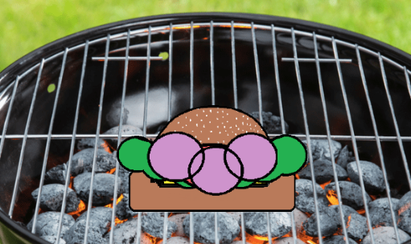
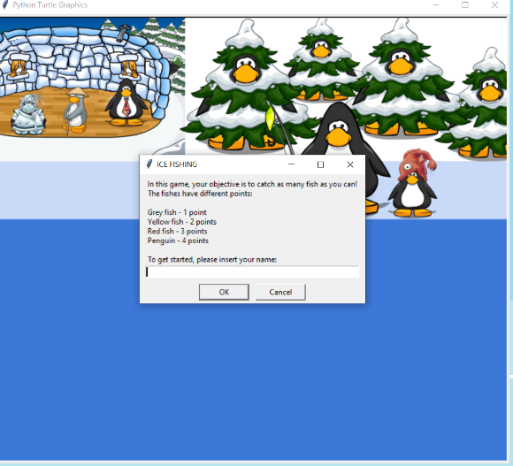
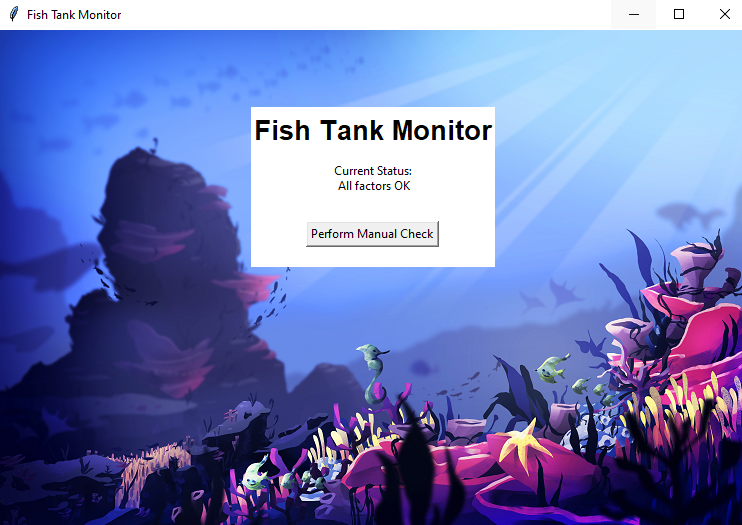
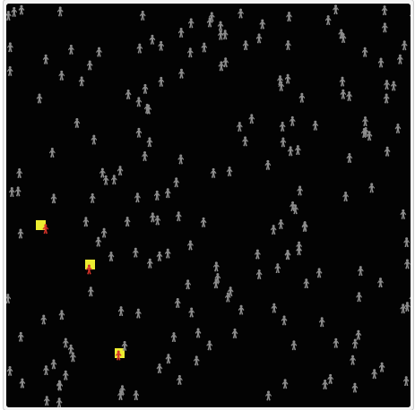

Home
Portfolio
About Me
This is my Portfolio Page!

First project- In 1.1.9 we made a customizable burger that made use of input statements, our turtle module and while loops to create a burger according to customer preference
1.2.5 Project

For 1.2.5 Project we made a fishing game similar to the club penguin fishing game that uses onkey presses to collect fish for score and then display a leaderboard
Scratch Project
We made a driving game dodging cops for our scratch project
2.1.6 Project

For the 2.1.6 Project we debugged a program that monitored the water of a fish tank
Simulation Project

For the 4.1.4 Project we studied a simulation modeling the spread of disease